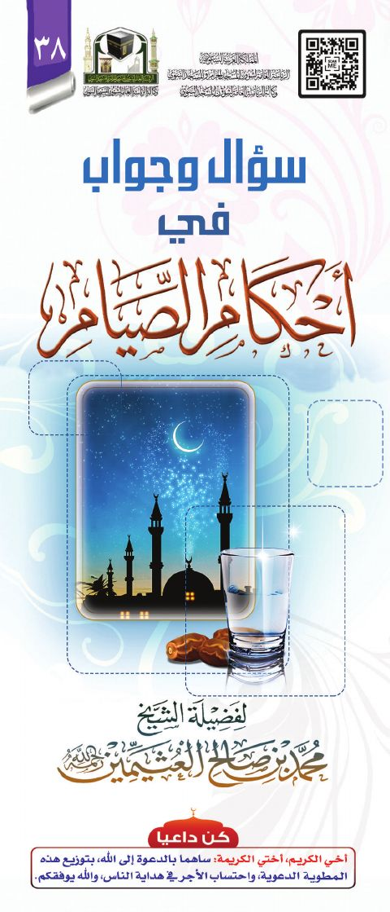

سؤال وجواب في أحكام الصيام
Authors: محمد بن صالح العثيمين
Download Downloads need an internet connection.
- Edition
- 1
- Volumes
- 1
- Pages
- 10
- Type
- كتيب
- Category
- الفقه وأصوله
Description
**▫️ العنوان: سؤال وجواب في أحكام الصيام** ▪️ المؤلف: #محمد_بن_صالح_العثيمين ▫️ الطبعة: 1 ▪️ عدد الأجزاء: 1 ▫️ الصفحات: 10 ▪️ نوع الوعاء: #كتيب ▫️ التصنيف الرئيسي: #الفقه_وأصوله ۪